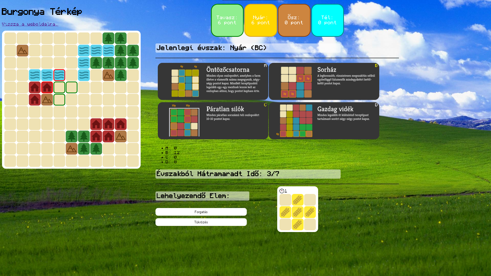

Bogdándy Béla Honlapja
Bemutatkozom:
Szia! Üdvözöllek a személyes honlapomon. A nevem Bogdándy Béla, jelenleg harmadéves hallgató vagyok az Eötvös Lóránd Tudományegyetem Informatikai Kar Programtervező Informatikus szakán.
In EnglishProjektjeim:
Webfejlesztés Projekt: Rajongói Weboldal
Egy egyszerű HTML/CSS projekt amely során egy weblapot kellett elkészítenem az egyik egyetemi órámra HTML/CSS segítségével. Témának a 'Mastodon' nevű amerikai bandáról készítettem egy rajongói weboldalt.

Ez a weboldal a Mastodon amerikai heavy metal zenekar történetét, diszkográfiáját és tagjait mutatja be. Az érdeklődők hírlevelet is kérhetnek a bandáról, koncertinformációkról és a weboldal frissítéseiről. A felhasználók visszajelzést is küldhetnek a weboldal fejlesztésével kapcsolatban. (A visszajelzés, illetve a weblap frissítése nem garantált.)
Javascript Projekt: Egyszemélyes Társasjáték
A játékban különböző alakzatú és tereptípusú elemeket helyezel el egy 11x11-es rácson, miközben a küldetések alapján pontokat gyűjtesz. A cél, hogy a 28 időegység alatt minél hatékonyabban töltsd ki a térképet és teljesítsd a császárnő kívánságait!
